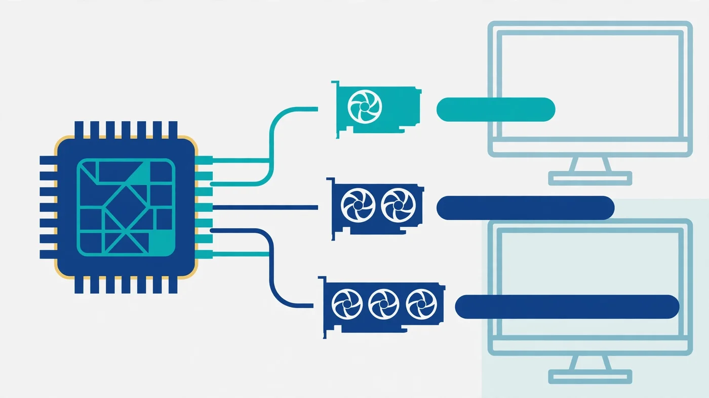

Best GPU for Ryzen 7 7800X3D: Balanced Pairing Guide
The best GPU for Ryzen 7 7800X3D depends on your monitor more than on the CPU itself. This processor is unusually forgiving: its stacked 3D V-Cache keeps games fed with data, so it rarely becomes the limit before the graphics card does — which means the right pairing is the card that matches your resolution and refresh rate, not simply the most expensive card you can afford. For most owners, that sweet spot is a balanced high-end card such as the RX 9070 XT or RTX 5070 Ti; this guide explains why, what to pick at each budget, and which pairings waste money.

Best GPU for Ryzen 7 7800X3D: The Short Answer
If you want one recommendation and no caveats: for high-refresh 1440p gaming, buy an RX 9070 XT or an RTX 5070 Ti. Both are fast enough that the graphics card, not the CPU, sets the pace at 1440p, with enough memory and headroom for demanding titles and 4K at sensible settings. The RX 9070 XT generally offers the stronger value for traditional rasterised gaming, while the RTX 5070 Ti earns its place if you care about heavy ray tracing, DLSS, or creator software that favours NVIDIA.
One tier down, the RX 9070 and RTX 5070 are the sensible mid-range pairings: excellent for 1440p, capable at 4K with adjusted settings, and a better fit if your budget is fixed. One tier up, the RTX 5080 is the premium choice for high-refresh 4K, and the RTX 5090 is for buyers where cost is genuinely secondary. Below the mid-range, 16GB cards such as the RX 9060 XT 16GB and RTX 5060 Ti 16GB are the budget picks that still make sense with this CPU. The rest of this guide explains the reasoning behind each tier, so you can adjust the recommendation to your own monitor and budget.
Why the 7800X3D Rarely Bottlenecks a Modern GPU
The Ryzen 7 7800X3D is an 8-core, 16-thread Zen 4 processor whose defining feature is 96MB of L3 cache, thanks to AMD's 3D V-Cache stacking extra cache on top of the compute die. Games constantly fetch small pieces of data — textures, geometry, game state — and a huge cache means more of that data is already close at hand instead of waiting on system memory. The result is smoother frame delivery, especially in the 1% lows that decide whether a game feels stuttery, even when average frame rates look fine. Our guides on frame time and stuttering and 1% lows explain why that consistency matters more than a headline FPS number.
Practically, this means the 7800X3D is almost never the reason a modern graphics card underperforms at 1440p or 4K: the CPU prepares frames faster than most cards can draw them there, so the graphics card becomes the limit — which is exactly what you want, because every bit of GPU performance you paid for gets used. The exception is competitive gaming at 1080p with very high frame-rate targets, where the CPU's preparation speed can set the ceiling; even there, the 7800X3D's ceiling is high. If your own system shows low GPU usage, our low GPU usage guide helps you confirm whether the CPU really is the limit.
Two supporting parts deserve the same attention as the GPU. The 7800X3D runs on the AM5 platform with DDR5 memory, and a dual-channel DDR5 kit with its EXPO profile enabled lets the chip perform as intended — our XMP/EXPO guide walks through turning it on, and our single vs dual channel guide shows why one stick is a false economy.
Best GPU for Ryzen 7 7800X3D at 1080p, 1440p and 4K
Resolution is the single biggest factor in this pairing, because it decides which part works harder. At 1080p, frames are cheap for the GPU to draw, so the CPU's preparation speed matters most — and a mid-range card is often all a 1080p monitor can use, since the 7800X3D pushes frame rates high enough that the monitor becomes the practical limit. Buying a flagship for a 1080p 60Hz display wastes most of the card; our resolution bottleneck guide explains how the balance shifts with each step up.
At 1440p — the sweet spot for this CPU — the workload balances beautifully. A balanced high-end card works hard, the CPU keeps it fed, and high-refresh monitors in the 144Hz to 240Hz range are genuinely usable. This is where the RX 9070 XT and RTX 5070 Ti shine, and where most 7800X3D owners should spend their GPU budget.
At 4K, the graphics card dominates completely: the CPU's job barely changes, so a 7800X3D can credibly anchor a 4K build with an RTX 5080 or even a 5090. The practical 4K advice is to buy the strongest card your budget allows and to prioritise VRAM, covered below, over chasing a CPU upgrade you do not need.
The Pairing Tiers at a Glance
| Tier | Example cards | Best for | Watch out for |
|---|---|---|---|
| Budget | RX 9060 XT 16GB, RTX 5060 Ti 16GB | 1080p high-refresh, entry-level 1440p | Leaves CPU headroom unused; prefer 16GB versions |
| Mid-range | RX 9070, RTX 5070 | 1440p high-refresh, 4K with adjusted settings | Heavy ray tracing at 4K will need settings compromises |
| Balanced high-end | RX 9070 XT, RTX 5070 Ti | High-refresh 1440p, ultrawide, capable 4K | Check power supply and case length before buying |
| Premium | RTX 5080, RTX 5090 | High-refresh 4K, heavy ray tracing, creator work | Diminishing returns at 1080p and standard 1440p |
Read the tiers as a ladder, not a ranking of quality: each step exists because a different monitor justifies it. If your monitor is 1440p, the balanced high-end tier is the destination; the premium tier only earns its keep when the monitor — or the workload — demands it. Our CPU and GPU pairing guide covers the same ladder logic for any combination.
Best GPU for Ryzen 7 7800X3D by Budget
On a tight budget, the 16GB versions of the RX 9060 XT and RTX 5060 Ti are the picks: they handle 1080p high-refresh comfortably and 1440p at sensible settings, and their memory capacity keeps them relevant as texture sizes grow. Avoid 8GB cards for a new build with this CPU if you can — the saving is small, the memory ceiling arrives early, and you will feel it in exactly the demanding titles you bought a 7800X3D to enjoy.
At a mid-range budget, the RX 9070 and RTX 5070 are the natural partners. They turn the 7800X3D into a strong 1440p machine with headroom for the next few years of releases, and they stay useful at 4K if you are willing to tune settings rather than max everything.
At a high-end budget, choose between the RX 9070 XT and RTX 5070 Ti on features, not just speed: ray tracing and DLSS point to NVIDIA, raster value points to AMD, and either card will keep the 7800X3D busy at 1440p and beyond. At a no-compromise budget, the RTX 5080 is the premium pick most buyers should stop at. Before committing to any tier, run the pairing through the PC Bottleneck Calculator (see its methodology) and compare current street prices, which move enough to flip the value winner between AMD and NVIDIA from month to month.
VRAM: How Much Do You Need With a 7800X3D?
VRAM is the quiet spec that decides how long a pairing stays good. At 1080p, 12GB is comfortable for most titles today; at 1440p, 16GB is the safer choice for high texture settings and for the years ahead; at 4K, 16GB is effectively the floor for demanding games with high-resolution texture packs. When VRAM runs out, the card spills data to system memory and frame times spike — a stutter that no CPU, however fast, can fix. Our VRAM guide breaks down the capacity question by resolution in detail.
This is why the 16GB cards feature so heavily in the tiers above, and why an older high-end card with limited memory can be a worse pairing than a newer mid-range card with more of it. When comparing two cards at similar prices, treat VRAM as a tiebreaker in favour of the larger capacity.
Ray Tracing, DLSS and FSR: When the Brand Matters
For traditional rasterised rendering — the way most games still draw most frames — AMD and NVIDIA cards at the same tier perform broadly comparably, and the choice comes down to price and features. Ray tracing changes the picture: NVIDIA's current cards handle heavy ray-traced lighting with less of a performance penalty, so if heavily ray-traced titles are your priority, the RTX side of each tier is the safer pick. Our ray tracing bottleneck guide explains where that cost lands on each part.
Upscaling narrows the gap. DLSS on NVIDIA and FSR on AMD both render at a lower internal resolution and reconstruct a sharper image, which effectively gives your GPU free performance — and with the 7800X3D keeping frame preparation fast, upscaling quality modes pair very well with this CPU. Frame generation goes further by synthesising extra frames, but it adds latency and is best reserved for single-player titles, not competitive games. Our DLSS, FSR and frame generation guide covers when each technology helps and when it hurts.
Power Supply, Case and Cooling Checks Before You Buy
A GPU upgrade fails more often on logistics than on performance. Check three things before ordering: power supply wattage and connectors, physical clearance, and airflow. High-end cards draw substantially more power than mid-range ones and may need three 8-pin connectors or a newer 12V-2x6 connector — a power supply that sufficed for a mid-range card may not suffice for a flagship, and an undersized unit causes crashes that look like instability elsewhere. Our PSU bottleneck guide explains what an undersized supply really does.
Measure your case: triple-fan high-end cards are long and thick, and a card that does not fit is a return, not an upgrade. Leave airflow headroom too — a powerful card dumping heat into a cramped case will throttle itself, and a throttling card performs like a cheaper one.
What to Avoid Pairing With a 7800X3D
Three pairings waste what this CPU offers. First, a very low-end card: the combination works, but you bought a high-end gaming CPU to drive a card that cannot use it, and the money would have been better spent on a stronger card or a better monitor. Second, an 8GB card for a new 1440p or 4K build: the memory ceiling arrives before the CPU ever becomes relevant. Third, a flagship card for a 1080p 60Hz monitor: the monitor caps what you can see, so the extra GPU power is invisible — upgrade the monitor first, then the card.
Also avoid assuming a CPU upgrade is the next step. Owners of a 7800X3D who feel their system is slow usually have a GPU, memory, storage or settings limit, not a CPU one — check usage and temperatures with our bottleneck check guide before spending on a new processor.
How to Check Your Own 7800X3D Pairing
Before you buy, measure what you already have. Play your most demanding game for ten minutes with an overlay showing GPU usage, CPU per-core usage and frame times. If GPU usage sits near full, your card is the limit and a GPU upgrade will help. If GPU usage stays low while one or two CPU cores sit near full at 1080p, the CPU is the limit for that game at those settings — but with a 7800X3D, that pattern usually means the settings are unusually CPU-heavy or a cap is in place, not that the CPU is weak. If both usages stay low, look for a frame cap, VSync, or a power or thermal limit first.
After any upgrade, repeat the same test in the same game and compare: a good pairing shows GPU usage near full at your target resolution, stable frame times, and no new thermal warnings. That before-and-after check is worth more than any calculator estimate, because it measures your games on your monitor.
Free PC Bottleneck Calculator — Estimate CPU and GPU balance for your resolution and workload: check whether your CPU or GPU is the slow half of the frame on the PC Bottleneck Calculator (see its methodology page) before you buy a GPU for your Ryzen 7 7800X3D.
Conclusion
The best GPU for Ryzen 7 7800X3D is the card your monitor justifies: an RX 9070 XT or RTX 5070 Ti for most owners at high-refresh 1440p, an RX 9070 or RTX 5070 for a tighter budget, a 16GB budget card if funds are fixed, and an RTX 5080 or above only when 4K high-refresh or heavy ray tracing demands it. The CPU itself rarely needs defending — its 3D V-Cache keeps it ahead of the graphics card at every resolution that matters — so spend on the GPU tier that matches your display, give it 16GB of VRAM where you can, check your power supply and case, and let the 7800X3D do what it does best: stay out of the way.
Frequently Asked Questions
What is the best GPU to pair with the Ryzen 7 7800X3D?
For most 7800X3D owners, a balanced high-end card such as the RX 9070 XT or RTX 5070 Ti is the best pairing: it matches the CPU at high-refresh 1440p and handles 4K well without the extreme cost of a flagship. If you mainly play at 4K with heavy ray tracing, step up to an RTX 5080; if your budget is tighter, an RX 9070 or RTX 5070 still pairs sensibly.
What is the best budget GPU for the 7800X3D?
For a budget 7800X3D build, look at 16GB mid-range cards such as the RX 9060 XT 16GB or RTX 5060 Ti 16GB. They are strong for 1080p high-refresh and capable at 1440p, and their larger memory keeps them useful longer than 8GB cards. A budget card will leave some of the CPU's headroom unused at 1080p, but that is the right trade when the budget is fixed — the CPU stays ready for a later GPU upgrade.
Will an RTX 5070 bottleneck with a 7800X3D?
No, not in any way that should worry you. The 7800X3D is fast enough to keep an RTX 5070 fed at 1440p and 4K, where the graphics card is the limit anyway. At 1080p with very high frame-rate targets you may occasionally see the CPU set the ceiling, but that is true of nearly any pairing — it means the CPU is doing its job, not that the combination is wrong.
Is the 7800X3D good for 4K gaming?
Yes. At 4K the graphics card does most of the work, and the 7800X3D's large cache keeps frame times smooth while the GPU renders the scene. Pair it with a strong GPU and enough VRAM for 4K, and the CPU will rarely be what holds you back. At 4K, spend your budget on the graphics card first.
Does the Ryzen 7 7800X3D have integrated graphics?
Yes, it includes basic AMD Radeon graphics for display output, so you can get a picture on screen without a discrete card. But that integrated graphics is not for gaming — for games you need a discrete graphics card, which is exactly what this guide helps you choose.
Sources
Official documentation referenced in this guide: